Urbanidad · Universidad · Paisajes
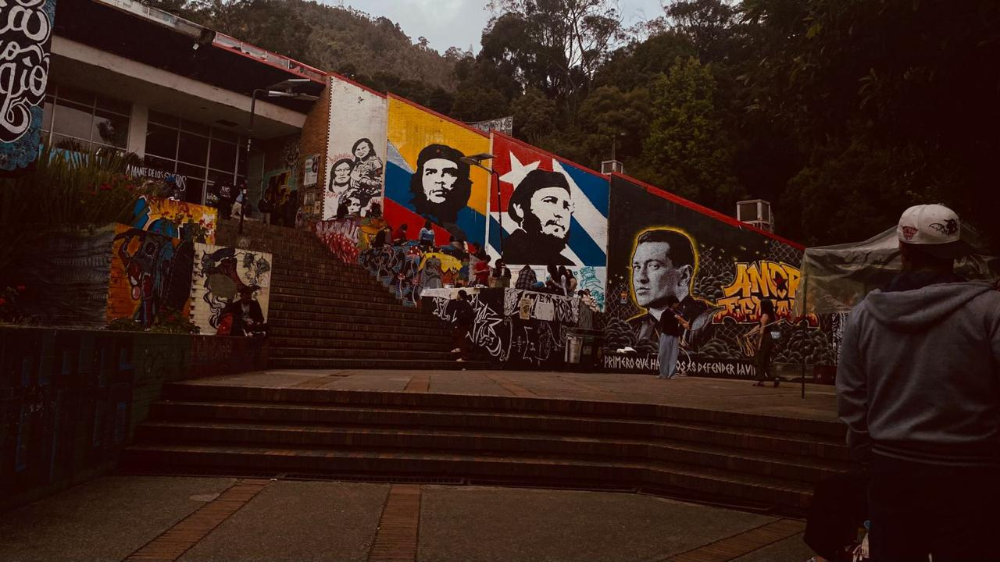
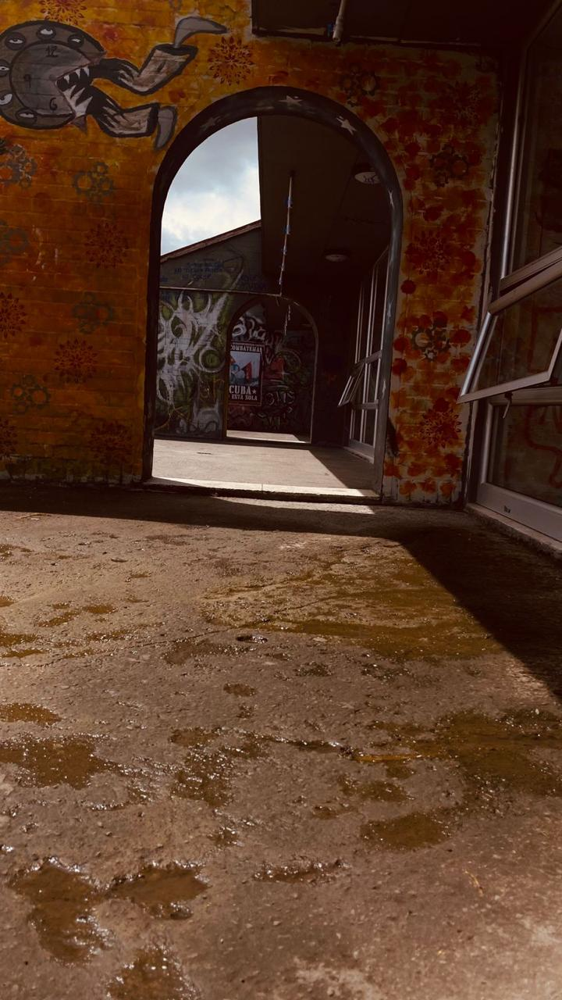
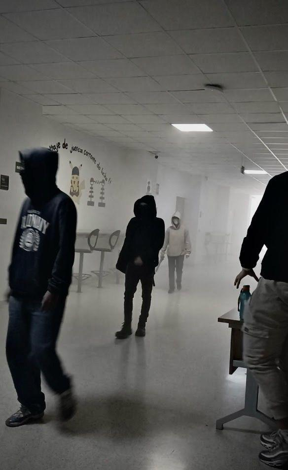
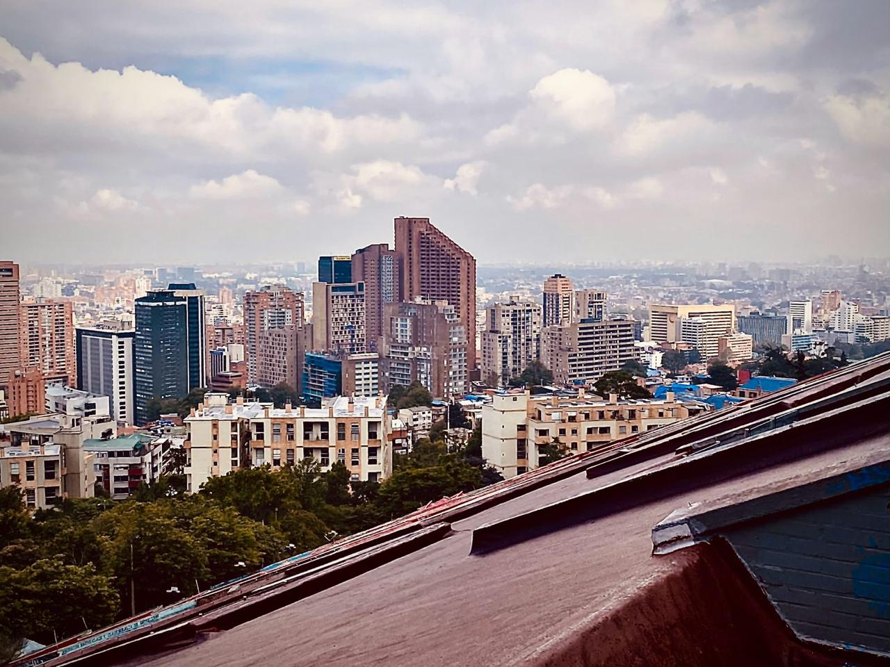
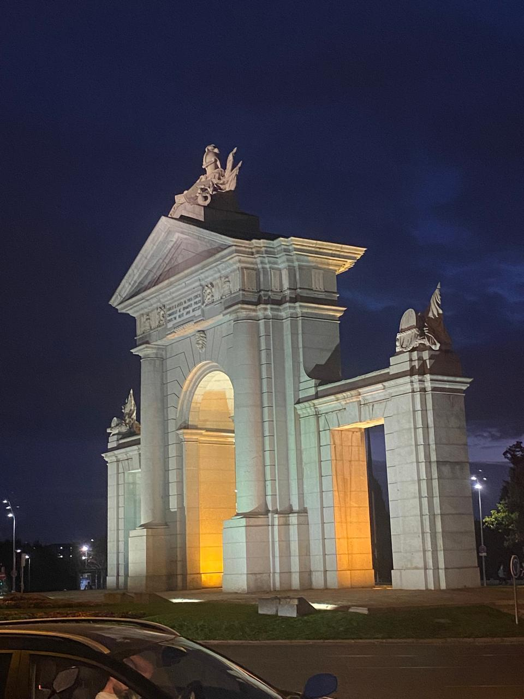
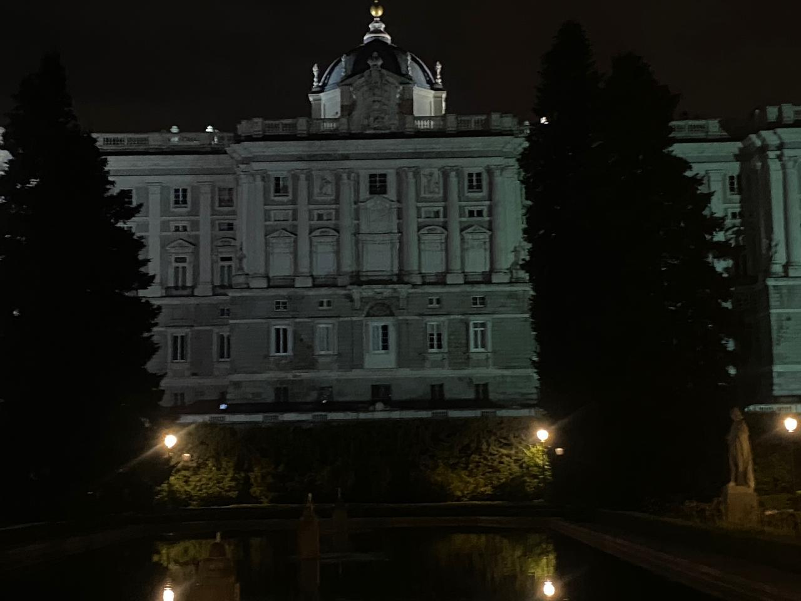
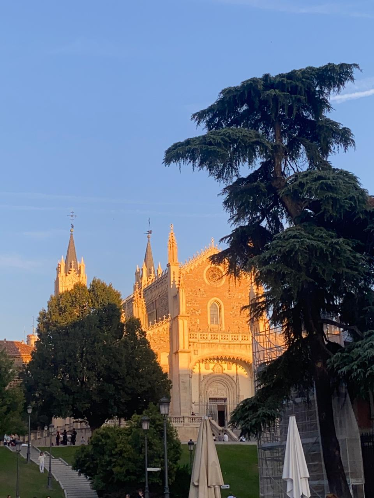
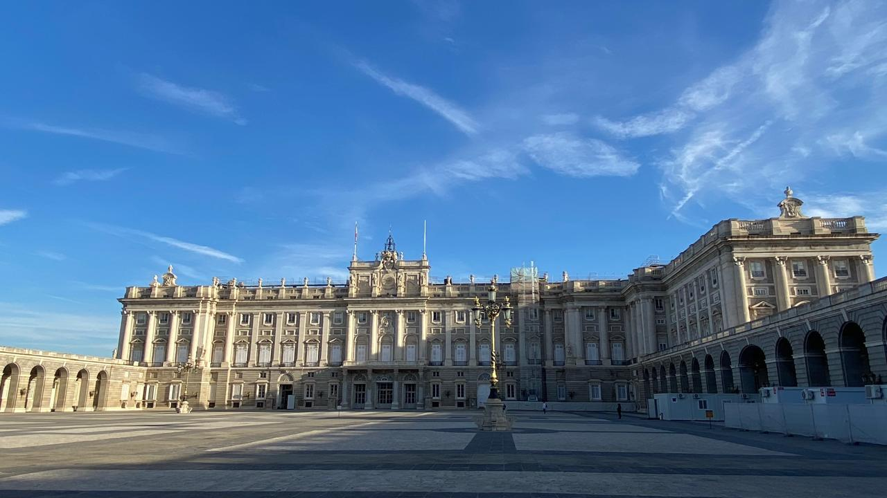
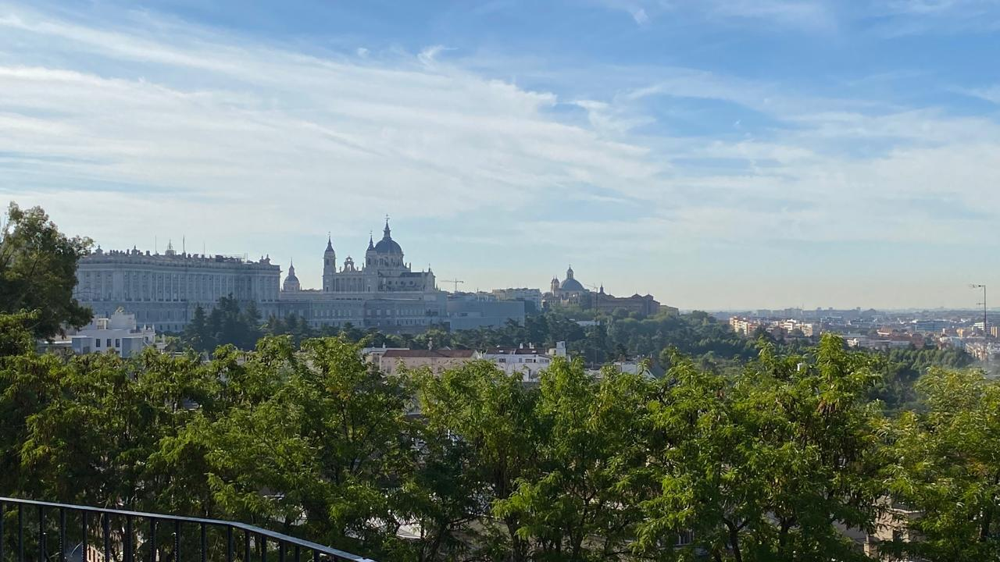
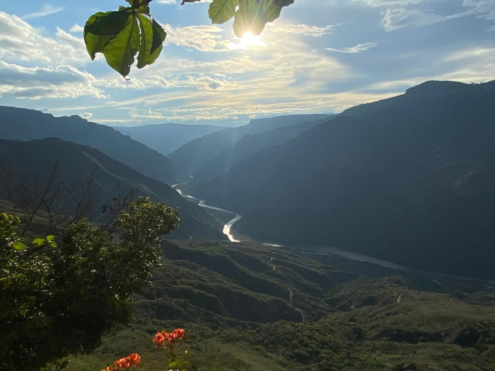
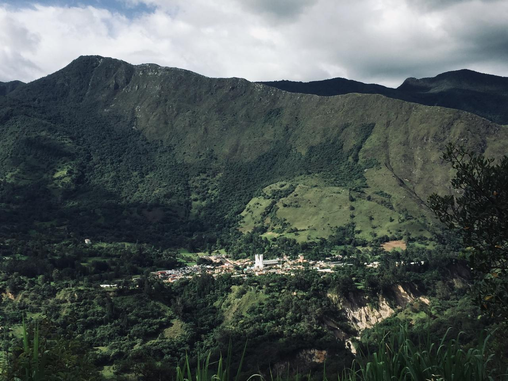
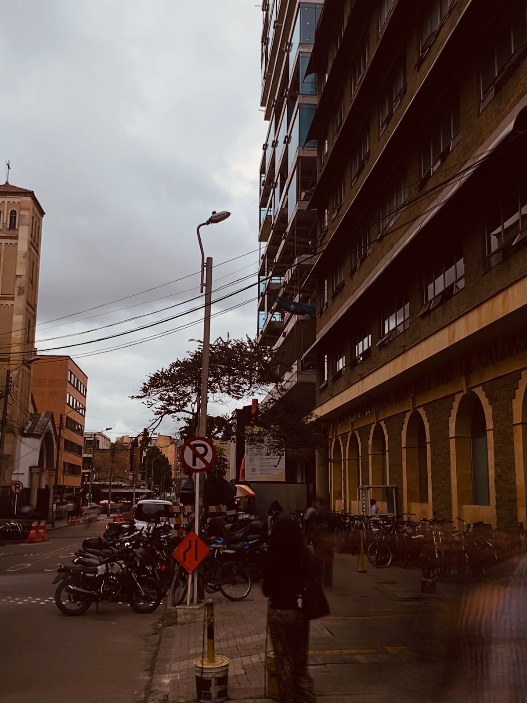
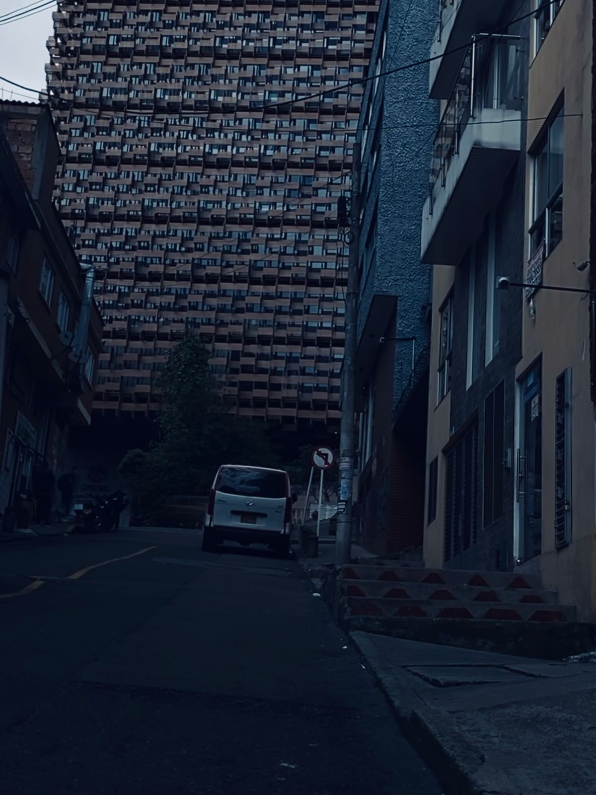
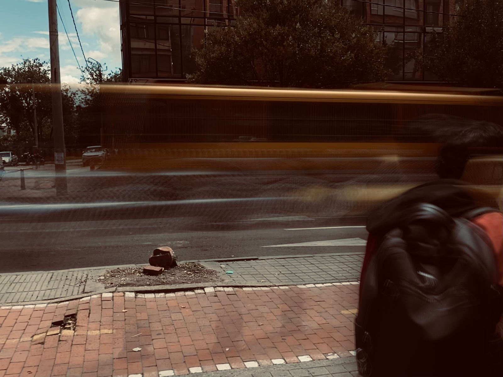
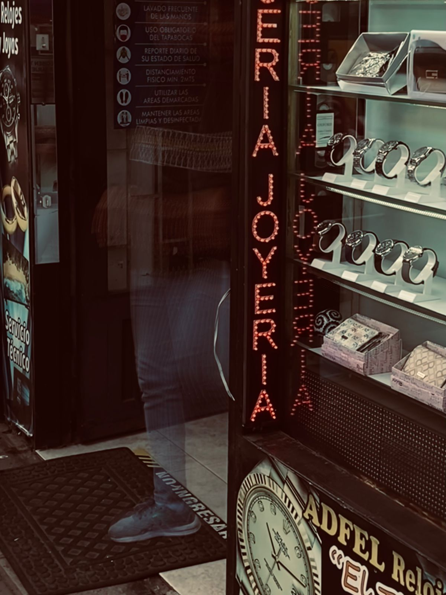
Entre la velocidad de Bogotá y la calma boyacense aprendí a mirar los detalles. La fotografía es mi forma de capturar esos pequeños momentos donde la luz, el tiempo y las historias se encuentran.